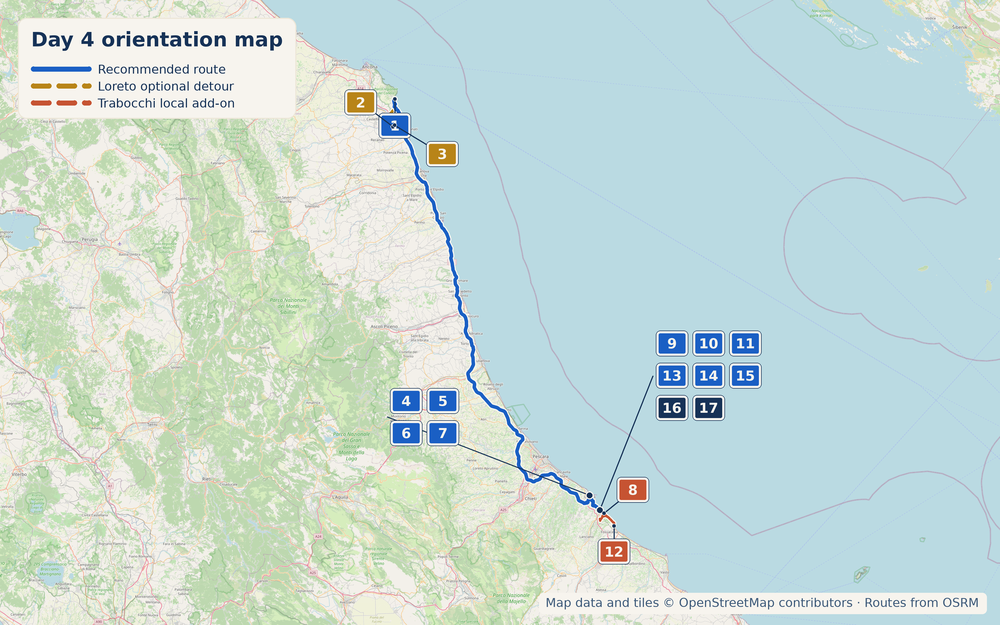

Overview
16 September 2026 is a Wednesday. Genuinely the emptiest, longest driving day on the route.
Stops

- Why stop: Houses what tradition holds to be the actual home of the Virgin Mary. 4.8★/26,627 reviews.
- Time required: 45–90 min
- Worth the detour: Optional
- Approx cost: Free
4.6★/2,236 reviews. One of the most awarded pastry shops in Italy — founded 1978 by Elisabetta Marcozzi, now under Claudio Marcozzi. Gambero Rosso's top rating "Tre Tazzine & Tre Chicchi" for 10 consecutive years, won the Gran Premio Internazionale della Ristorazione as Italy's best pasticceria in 2020. Signature: Rossini (chocolate mousse with pistachio bavarese), Esmeralda (coffee sponge with zabaione).

- Why stop: A genuine port town. The Cattedrale di San Tommaso holds the relics of the Apostle Thomas, stolen from Chios by an Ortonese sailor named Leone in 1258, along with the original tombstone bearing a Greek inscription. The annual Feast of the Pardon celebrates this with a Renaissance-style procession; add Castello Aragonese and a wander through the old town around it.
- Time required: 1–1.5 hours
- Why stop: WWII Commonwealth war cemetery from the December 1943 Battle of Ortona, with 1,615 graves, including 1,375 Canadian graves in the official CWGC count. A quiet way to understand why this small port has such weight in Canadian military memory.
- Time required: 20–30 min
- Why stop: A trabocco is a wooden fishing platform on stilts. The most famous, Trabocco Turchino, was immortalised by Gabriele D'Annunzio in Il Trionfo della Morte.
- Time required: Half day plus dinner
Coffee & Pasticceria (Ortona)
Historic pastry shop, praised for both coffee and traditional Abruzzo sweets (mostaccioli, celli, torroncino di mandorle).
Dinner (San Vito Chietino)
Dinner on an actual working trabocco. Fixed menu €30 (aperitivo-style) or €60 (full dinner).
Built in the early 1900s by fisherman Orlando Verì and son Ernesto, named for a large palombo/dogfish caught in the nets. Now run by descendants Bruno and Giuliana Verì with daughters Anna and Enrica as chefs. Ranked #1 of 27 restaurants in Fossacesia Marina, 4.3–4.5★ across 900+ reviews, fixed menu €50–70pp.
Local Speciality
Brodetto alla San Vitese, calamarata with scampi and canocchie, whatever the trabocco caught that morning.

What to Buy
Extra virgin olive oil from Frantoio Giocondo (Salsedine or Ginestra), native Abruzzo wine from Cantina Olivastri Tommaso.

Hidden Gem
Family olive oil mill, organic, run by Dino and Cinzia who personally guide tastings in English. Award-winning, family-run since 1930.
Cool, Interesting & Quirky
Four generations growing native Abruzzo grape varieties. Tastings hosted by Tommaso's daughters (Valentina, Chiara), €5–15/bottle.
Accommodation
My pick.
Today's Route & Timing
Organic Maps route legs (POIs remain visible)
Import Day 7 POIs once, then open each leg in order. The Google buttons above retain the complete route as a fallback.
Recommended Route:
Loreto Route:
Useful stop maps: Loreto basilica Google Castello Aragonese Google Trabocco dinner Google
Print timing summary: suggested 9:00am departure. Base recommended day via Ortona and the Moro River cemetery is approximately 6h45–8h, finishing around 3:45–5:00pm before dinner. Skipping Ortona saves about 1h15–1h30. The Loreto/Picchio detour adds about 1h15–2h. Ortona castle/old-town linger adds 30–45 minutes; one olive oil or winery tasting adds 45–75 minutes; Trabocco Punta Turchino adds 30–45 minutes. Under 8 hours is comfortable, 8–10 hours is long, and over 10 hours is a very long day.
Day 7 route map

Numbered points of interest
- Conero Camere, Sirolo StartVia Grilli 14, 60020 Sirolo AN, Italy
GPS: 43.5229034, 13.6186971 - Basilica della Santa Casa Optional historic sitePiazza della Madonna 1, 60025 Loreto AN, Italy
GPS: 43.4410010, 13.6108062 - Pasticceria Picchio Food stopVia Traversa Don Enzo Rampolla 2, 60025 Loreto Stazione AN, Italy
GPS: 43.4466094, 13.6175825 - Ortona old town / Corso Vittorio Emanuele Historic centreCorso Vittorio Emanuele, 66026 Ortona CH, Italy
GPS: 42.3535835, 14.4032270 - Pasticceria Cantelmi Giulio Food stopCorso Vittorio Emanuele 73, 66026 Ortona CH, Italy
GPS: 42.3535835, 14.4032270 - Castello Aragonese Historic siteLargo Castello, 66026 Ortona CH, Italy
GPS: 42.3588317, 14.4058573 - Moro River Canadian War Cemetery Historic siteContrada San Donato, 66026 Ortona CH, Italy
GPS: 42.3368140, 14.4165319 - Trabocco Punta Turchino Viewpoint / trabocco heritageContrada Portelle, 66038 San Vito Chietino CH, Italy
GPS: 42.3006606, 14.4608939 - Marina di San Vito / Costa dei Trabocchi Beach / coastal baseMarina di San Vito, 66038 San Vito Chietino CH, Italy
GPS: 42.2963540, 14.4436070 - Trabocco Vento di Scirocco Food stop / trabocco dinnerVia Lungomare di Gualdo, 66038 Marina di San Vito CH, Italy
GPS: 42.3107684, 14.4462617 - Aldebaran da Rocco e Tommaso Food stopVia Lungomare di Gualdo 4, 66038 Marina di San Vito CH, Italy
GPS: 42.309154, 14.445654 - Trabocco Pesce Palombo Optional food stopSS16 Adriatica km 486.6, 66022 Fossacesia CH, Italy
GPS: 42.2619012, 14.5017989 - Le Due Palme Food stopVia San Rocco, 66038 San Vito Chietino CH, Italy
GPS: 42.292305, 14.443628 - Frantoio Oleario Giocondo de Santis Shop / food heritageVia San Rocco Vecchio 7, 66038 San Vito Chietino CH, Italy
GPS: 42.2913838, 14.4447461 - Azienda Agricola Olivastri Tommaso Winery / shopVia Quercia del Corvo 37, 66038 San Vito Chietino CH, Italy
GPS: 42.2779149, 14.4456199 - B&B La Finestra Sui Trabocchi AccommodationVia Lungomare di Gualdo 31, 66038 Marina di San Vito CH, Italy
GPS: 42.3096483, 14.4445601 - Locanda dell'Adriatica Accommodation / food stopLargo Olivieri 5, 66038 Marina di San Vito CH, Italy
GPS: 42.3080635, 14.4459466
OpenStreetMap-derived orientation map only, not turn-by-turn navigation. Import this day’s POIs once to keep its bookmark pins visible in Organic Maps navigation. Use the Organic Maps route legs above for POI-visible navigation; Google Maps remains the complete-route fallback.
If Time Is Tight
Skip Loreto and Ortona both. Drive straight to San Vito Chietino, book a trabocco dinner.
If You've Got Half a Day
Add Ortona's old town and castle, and a tasting stop at the frantoio or cantina before dinner.
Skip It
🏆 Today's Winners
Road Trip Score
| Category | Rating |
|---|---|
| Food | ★★★★☆ |
| Coffee | ★★★☆☆ |
| Atmosphere | ★★★★★ |
| Photography | ★★★★★ |
| History | ★★★☆☆ |
| Young Traveller Appeal | ★★★★☆ |
| Worth Detour | ★★★★★ |